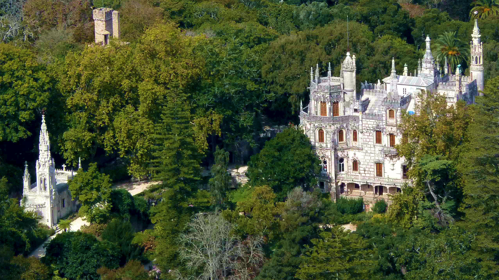
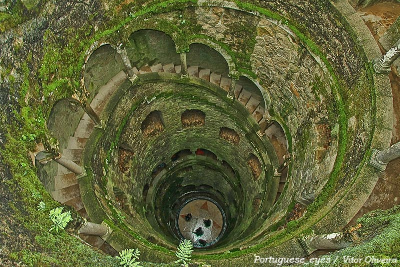
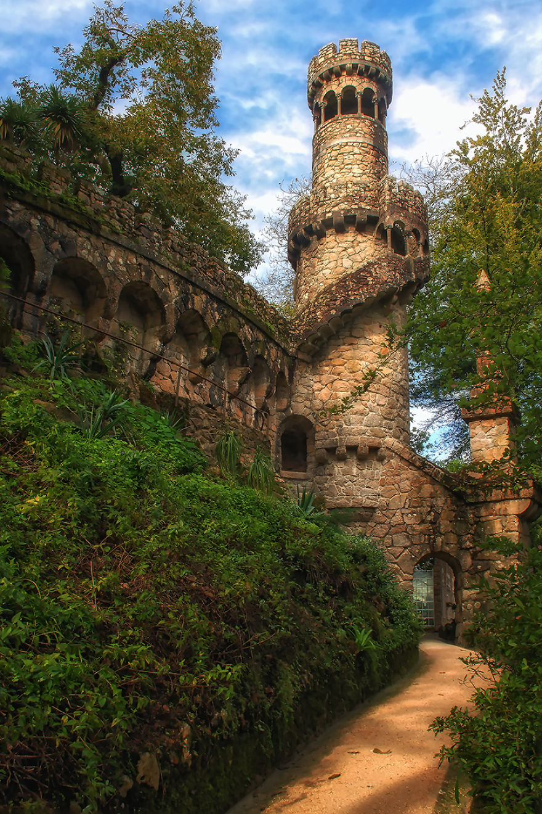
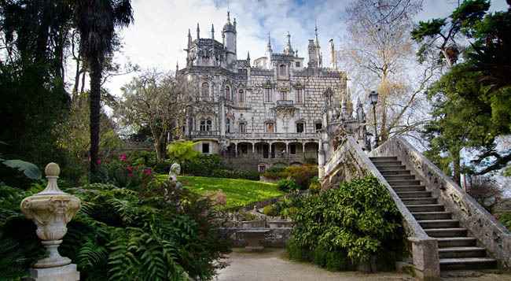
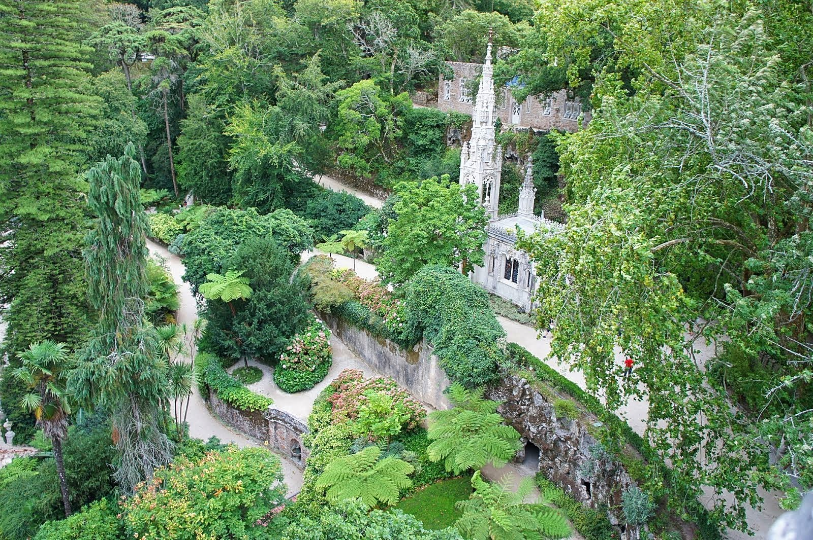
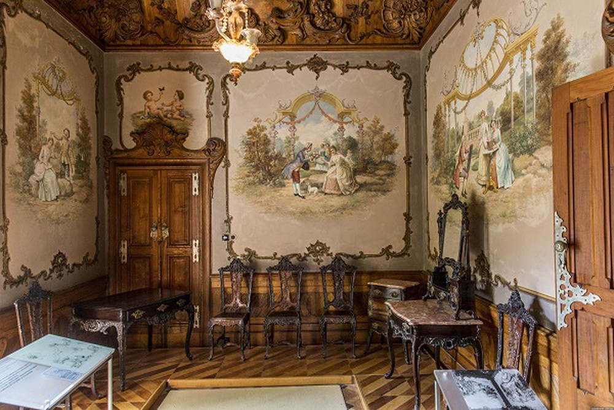

DAY TRIP
This is Sintra - a Day to Remember!
About your host
Olá from Duarte & Friends:
We don't like to brag about our experience because this all started with a 1st daytrip w/ foreign buddies - 6 years ago - to a place I called home for as long as I remember – Sintra! (my family has farms in the forest for 100 years)
After that day, I realized that more than a tour I could provide an unforgettable day between friends with simply wonderful moments together... feeling just like LOCALS! This is how I started my small company - Keep it Local Tours
As you can read, my Friends know what they are doing too, so a Dream Team is set and ready for You!
What we’ll do
Hi Everyone, we are Duarte & Friends !
IF you like to be TOURISTS but also LOVE TO "DIVE" INTO THE SMALL AND UNTOURISTY PLACES (not missing the Touristy ones too!) and FEEL LIKE A LOCAL... this Experience IS FOR YOU!
Famous for Culture and unique landscapes, SINTRA is a MUST, too EPIC to be missed! From a Freemason Palace to a stunning WEST COAST, ending up in beautiful WOODS that will remind you of "LORD OF THE RINGS", Sintra is more than what everyone thinks... That's why we started a small Company - "Keep it Local Tours"!
So our DAY TOGETHER:
- Regaleira Palace - our EXPERTISE (Tickets NOT INCLUDED but cheap & We OFFER our famous GUIDED TOUR!)
- Small villages
- Amazing traditional lunch in a LOCAL Restaurant near the coast (not includ. but great price)
- Adraga Beach - the wildest!
- Cabo da Roca (Most WESTERN Point Europe Mainland! )
- Our secret Countryhouse in the WOODS or "Peninha" - Misty forest in the Natural Park w/ the best view (Depends who´s doing the tour)
You can meet our Neighbours, friends or "Balu", our Portuguese DOG! We can´t wait to ride with you on roads we call home...
Surprises will come and we hope you DON´T FORGET US!
What else you should know
Palace Tickets not includ. but 1h Guided Tour inside is!
Jacket, towel & swimsuit
If the experience is full contact us anyways, we maybe can make it work :)
We love FAMILIES w/ kids - Message us!
What I’ll provide
- Water and a little surprise at lunch for all!
- Transportation
- AWESOME GUIDED TOUR in Regaleira Palace (Tickets excluded ) A/C | Insurances | Jackets & Coolest MUSIC ONBOARD - trust us!
Traditional snac
What to bring
Some money for Palace & Best Lunch Ever
Best mood ever + Endless energy + some SWEETS for the Guide (if they deserve!)
Light jacket (weather is tricky sometimes) + towel + swimsuit for the beach (in summer only!)
Guest Photos
- 
- 
- 
- 
- 
- 
Guest Reviews
Where we’ll be
- Regaleira Palace (Tickets NOT incl. but we OFFER you an EPIC GUIDED TOUR inside!) - Small villages - Lunch in a local restaurant near the beach - Adraga Beach (we go to water or just have a nice walk :) ) - Cabo da Roca (Most Western Point Europe Mainland) - Our secret Countryhouse in the WOODS or Peninha Area - Gorgeuous Forest in the Natural Park - Last tasty surprise ! (We´ll see all other monuments from outside too, if the weather allows)
Upcoming availability
Mon, Mar 18 | 9:00 AM – 5:30 PM
₫1,670,085 per person
Over 510 people rated this experience 5 stars.
Keep these in mind
Cancellation policy
Any experience can be canceled and fully refunded within 24 hours of purchase. See cancellation policy.
Who can come
Guests ages 5 and up can attend.
We also love FAMILIES with kids! - just send us a message for more info.
Group size
There are 16 spots available on this experience. Come to relax and enjoy different experience Activities
Alcohol
This experience includes alcohol. Only guests who meet the legal drinking age will be served alcoholic beverages.